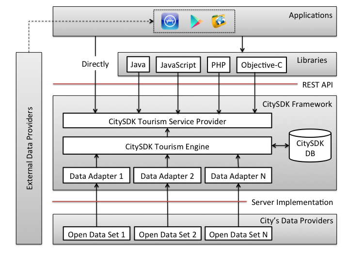

Tourism WP
This website is intended to support the CitySDK Tourism Working Package. The system architecture is shown in the figure below:

Cities provide their Data Sets to the CitySDK Framework. This is achievable by implementing the Data Adapters which load such sets into the Framework's engine. Such Data Adapters and the CitySDK Framework is explained in Server Implementation Reference.
There are two ways that applications can make use of the Data provided by the Framework:
- By using the REST API directly (which is described and documented in REST API). To make use of the API, one must use a generated key provided in Developer Keys;
- Or by using one of the provided Libraries which ease the use of the REST API and parsing of the returned data. Such libraries have documentation and usage examples in the same section.
Finally, in Applications, we demonstrate a few applications using the mentioned API and libraries.
This Working Package took part the cities mentioned in Participating Cities. Website, libraries and applications done for the CitySDK Tourism WP.